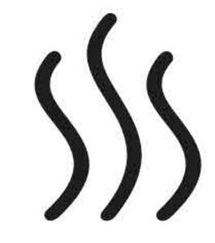

Trade Mark Journal No.2025/052 26 December 2025
UK00004213262 3 June 2025 (3,4,5,8,18,21,24,25,31,35,37,41,43,44)

- Class 3
- Eye-masks filled with lavender or other herbs, flowers or plants; beauty masks; facial packs; bath salts; potpourri; scented essential oils for application to potpourri; cushions and sachets filled with lavender or other herbs, flowers or plants; perfumes; toilet waters; eau de cologne; perfume oils; aromatherapy oils and products; essential oils; incense; incense holders and sticks; incense cones; incense sachets; incense spray; massage oils; non-medicated massage preparations; extracts of flowers; breath freshening preparations; perfuming preparations for the atmosphere; soaps; body washes; non-medicated toilet preparations; non-medicated toilet preparations produced from essential oils; preparations for the care of the hair, skin, scalp, face and nails; lip balms; skin toner; moisturisers; shampoos; conditioners; creams and lotions for removing make-up; sun-tanning preparations; sun-screening preparations; deodorants and antiperspirants; body sprays; bath and shower products; foam bath, bath salts, bath oil; shower gel; depilatory preparations; shaving preparations; aftershave preparations; cosmetics; tissues and wipes impregnated with non-medicated toilet preparations; cotton wool and cotton wool buds; cleaning preparations for household use.
- Class 4
- Candles; scented candles; night lights and wicks for candles.
- Class 5
- Air freshening preparations; air purifying preparations; odour neutralizing preparations; deodorising preparations; insect repellents; medicated bath and toilet preparations; pharmaceutical preparations and substances; vitamins; vitamin preparations; nutritional supplements; dietetic substances adapted for medical use; medicinal drinks and infusions; medicinal oils; medicinal herbs.
- Class 8
- Sauna ladles.
- Class 18
- Cosmetic bags; sponge bags; wash bags.
- Class 21
- Dispensers incorporating pumps; sponges; candle sticks, candle holders; combs; brushes, hairbrushes, eyelash brushes; cosmetic brushes; cosmetic and toilet utensils; applicators for cosmetics; containers for cosmetics; cosmetics cleaning implements; cosmetics utensils; soap dishes; soap dispensers; soap holders; soap boxes; containers for toothbrushes; toothbrushes; basins; shaving brush stands; shaving brushes; sponge holders; toilet brushes; toilet cases; toilet paper holders; toilet sponges; toilet utensils; towel racks; toothbrush holders; Sauna buckets.
- Class 24
- Towels; Towels made of textile materials; flannels; cloths.
- Class 25
- Clothing, footwear and headgear; Hats; Woolly hats; underwear; loungewear; nightwear; slippers; robes; sun visors; swimwear; aprons, bathrobes, dressing gowns.
- Class 31
- Birch sauna whisks; Birch sauna whisks; Sauna birch whisk.
- Class 35
- Shop retail services, mail order retail services, electronic retail services, retail services via a television channel, all connected with perfumery, toiletries, cosmetics, candles, candle sticks, incense, massage oils, essential oils, pharmacy goods, medicinal drinks and infusions, medicinal oils, medicinal herbs, foods, wines, beverages, clothing, footwear, headgear, utensils for bathrooms and kitchens, utensils and containers for cosmetics, crystal, glassware, porcelain ware, earthenware, chinaware, brassware, bed linen, table linen, place mats, towels, tea towels, cushions, jewellery, ornaments, cutlery, utensils and containers all for household, cooking or kitchen use, cake tins, trays, articles for baking, watering cans, tools and gloves for gardeners, picnic baskets, articles for cleaning purposes, souvenirs, hair accessories, hampers, hampers containing food and beverages, hampers containing toilet articles, hampers containing towels, hampers containing toilet preparations, piece goods, sewing accessories, eyewear, sound recordings, audio/visual recordings, DVDs, CDs, records and video tapes, watches, horological and chronometric goods, books, stationery, printed publications and printed matter, diaries and personal organisers, greeting cards, gift wrap and ribbons, instructional and teaching materials, photographs, paintings, artists' materials, writing and drawing implements, playing cards, furniture, lighting, home furnishings, home decorations, leather goods and goods made from imitation leather, travel goods, carpets and rugs, wallpaper, wall hangings, wall coverings, paints, artwork, toys, games, playthings and sporting goods, Christmas tree decorations, toys and games for pets, tobacco and tobacco goods, smokers' requisites, bags, travelling cases; provision of subscription to electronic publications, periodical publications, magazines, and newsletters; providing ordering services by means of menus and inventories; .
- Class 37
- Construction of saunas.
- Class 41
- Entertainment services; sporting and cultural activities; casino services; cinema services; health club services; fitness club services; provision of gymnasium services; provision of private members clubs; club services [entertainment or education]; night club services; party planning services; arranging of lectures, exhibitions, demonstrations, displays and presentations; hospitality services; information, advisory and consultancy services relating to the aforesaid services.
- Class 43
- Services for providing food and drink; temporary accommodation; catering services including mobile catering services and catering services provided online from a computer database or from the Internet; restaurant services; self-service restaurant services; banqueting services; bar, public house, snack bar, wine bar, wine club services, sandwich bar, cafeteria, canteen and café services; cocktail lounge services; take away services; take-out restaurant services; wine tasting services (provision of beverages); club services for the provision of food and drink; fast-food restaurant services; hotel services; hospitality services [accommodation and food and drink]; bed and breakfast services; provision of guesthouse accommodation; reservation services and bookings services for hotels and temporary accommodation; reservation services for booking meals; rental of meeting, conference and reception rooms; providing facilities for conducting conferences, meetings, conventions, exhibitions, banquets, seminars, receptions, parties; day nurseries and crèche facilities; child minding services; rental of chairs, tables, table linen, and glassware; advisory and information services relating to the selection, preparation and serving of food and beverages; providing information and exchange of information in relation to foods, alcoholic beverages and non-alcoholic beverages including by way of the Internet; club dining services; information, advisory and consultancy services relating to the aforesaid services, including those provided online from a computer database or from the Internet.
- Class 44
- Hairdressing salons and beauty salons; sun tanning salon services; aromatherapy services; massage services; reflexology services; spa services; provision of steam room facilities; provision of solarium facilities; beauty treatment services, makeup services, body and skin care services; manicure services; pedicure services; cosmetic treatment services; electrolysis, waxing, tinting, make-up, grooming, colour diagnosis and body treatment services for cosmetic purposes; health care services; human hygiene and beauty care; health centers; physical rehabilitation; Medical, physical rehabilitation and physical therapy services; fitness evaluation services; Sauna services; Infrared sauna services; Providing sauna facilities; Sauna facilities (Provision of -); Operation of sauna facilities; Provision of sauna facilities; Services for the provision of sauna facilities; information, advisory and consultancy services relating to the aforesaid services, including those provided online from a computer database or from the Internet.
Wildhut Ltd
Representative: Knights Professional Services Limited